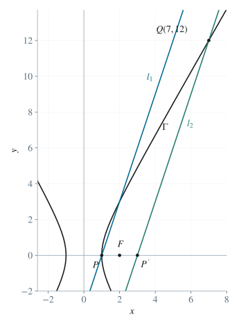
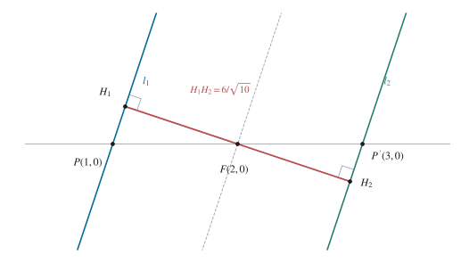

2.1 确定双曲线与右焦点
将 P(1,0) 代入双曲线方程，得 1/a2=1。因 a>0，故 a=1。再代入 Q(7,12)：
49−b2144=1⟹b2=3. （1）标准双曲线 x2/a2−y2/b2=1 的焦点为 (±c,0)，其中 c2=a2+b2。于是：
Γ:x2−3y2=1,c=2,F=(2,0). （2）2.2 证明焦点位于两平行线的中线上
取两直线的同一单位法向量 n，将它们写成 n⋅X=c1、n⋅X=c2，其中 c1=c2。单位法向量使点到直线的距离等于相应差值的绝对值；这种写法也包括竖直线。令 s=n⋅F，则等距条件为 ∣s−c1∣=∣s−c2∣。平方并展开：
(s−c1)2(c2−c1)(2s−c1−c2)=(s−c2)2,=0. （3）展开时，两个 s2 抵消，剩下 2s(c2−c1)+c12−c22=0；再用平方差公式提取公因子，便得到式（3）。由于两直线不重合，c2−c1=0，可以除去这个因子，得 s=(c1+c2)/2。这个数严格介于 c1,c2 之间，且到二者的差值相等，因此焦点位于两条平行线的中线上。
2.3 用中心对称确定第二条直线
令 P′=2F−P=(3,0)。因 P∈l1，有 n⋅P=c1，所以 n⋅P′=2s−c1=c2，即 P′∈l2。两点 P′(3,0),Q(7,12) 的横坐标不同，所以连接它们的直线斜率为 (12−0)/(7−3)=3。由点斜式，l2 经过 P′，而与它平行的 l1 经过 P，故：
l2: y=3(x−3),l1: y=3(x−1). （4）
图 1. 双曲线与两条平行线；P,Q 均在双曲线上，P′ 是 P 关于 F 的对称点。
2.4 求垂直距离并复核
将两直线写成 3x−y−3=0 与 3x−y−9=0。说明距离公式时，取第一条直线上的一点 X，沿单位法向量 n=(A,B)/A2+B2 移动有向距离 t，到达 X+tn。其左侧 Ax+By+C2 的值从 C2−C1 变为 C2−C1+tA2+B2。令它为零，得 t=(C1−C2)/A2+B2。因为这段移动垂直于两线，所求距离就是 ∣t∣。
本题代入 A=3,B=−1,C1=−3,C2=−9，得到：
d(l1,l2)=32+(−1)2∣−9−(−3)∣=106=5310. （5）同时，F 到两线的距离分别为 ∣6−3∣/10 与 ∣6−9∣/10，相等且各为所求距离的一半，满足题设。

图 2. 焦点附近的局部图。H1,H2 为垂足，F 是垂线段 H1H2 的中点。